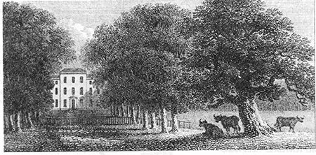
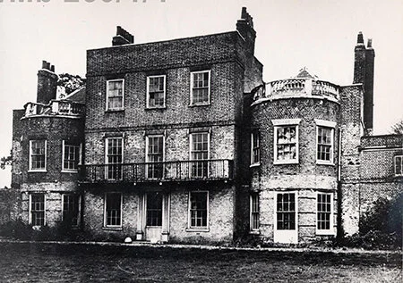

Historic parks, gardens and designed landscapes are one of the cultural icons of England, an ornament to the landscape and townscape, life-enhancing, bringing delight into our everyday lives. They contribute significantly to the sense of place and are treasured. They need to be if they are to continue to contribute to the quality of the environment in the face of the ever-increasing pressure of population growth and all that this brings.
EGT provides informed comment when gardens or designed landscapes are implicated by contemporary development. This requires us to comment on national Government development policy, Local Development Framework plans, on local planning applications, or pre-application stage proposals. In all cases, EGT's role is to highlight the importance of gardens and landscape, and evaluate the implications of proposed development.
Planning guidance is critical, as is a knowledge base, and appropriate, considered action where and when required.
The work of EGT's Garden History team is vital to its role in contemporary Planning & Development. The detailed inventories it prepares of every Essex district help to identify important heritage sites across the county. Many have importance at only a local level and therefore may not be protected by the National Heritage list.


The Trust's Governing document set out two objectives:
In order to do the second, it is first necessary to find out what exists or has existed. Our researchers do this through examining old and current maps, other archived material and visiting the area to see what is on the ground.
We have already done this for six council districts and one unitary authority in Essex: Braintree, Brentwood, Chelmsford, Epping Forest, Maldon, Thurrock and Uttlesford.
In July 2023 we were delighted to be awarded a grant of £3,000 by the Essex Heritage Trust to support the project being led by Emma Cannell to define historic gardens and landscapes in the City of Southend. The project was completed in the summer of 2024 and covered 14 sites providing a comprehensive account of the history and current condition of historic green space in the city.